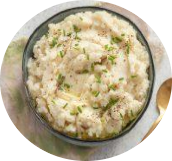

Purê de Couve-flir com Arroz Integral

Ingredientes para o pure de couve-flor
- 1 couve-flor média
cortada em floretes
- 2 dentes de alho picados
- 2 colheres de sopa de manteiga ou azeite de oliva
- Sal e pimenta a gosto
Ingredientes para o arroz integral
- 1 xícara de arroz
integral
- 2 xícaras de água ou caldo de legumes
- Sal a gosto
Modo de preparo do purê de couve-flor
- Cozinhe a couve-flor em água fervente até ficar macia.
- Escorra bem a couve flor cozida e coloque em um
processador de alimentos ou liquidificador.
- Adicione o alho, a manteiga ou o azeite de oliva, o,
sal e a pimenta.
- Bata até obter mistura cremosa e homogênea.
Reserve
Modo de preparo do arroz integral
- Em uma panela, coloque o arroz integral e a água ou caldo d elegumes
- Tempere com sal a gosto e leve ao fogo médio
- Deixe cozinhar por cerca de 30-40 minutos, ou até que o
arroz esteja macio e a água tenha sido absorvida
- Retire do fog e deixe descansar por alguns minutos
Montagem
- Em pratos individuais, coloque uma porção do purê de couve-flor e outra do arroz integral ao lado.
- Sirva quente como acompanhamento de outros pratos, como carnes ou legumes grelhados.